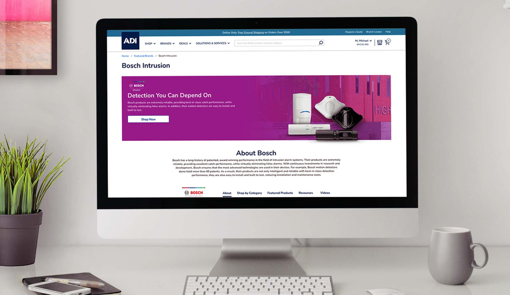
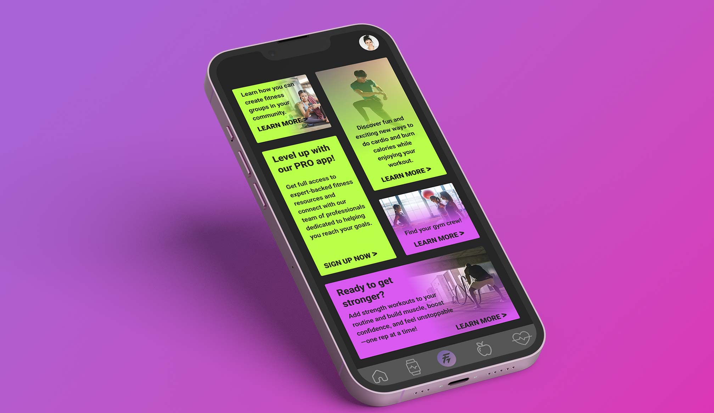
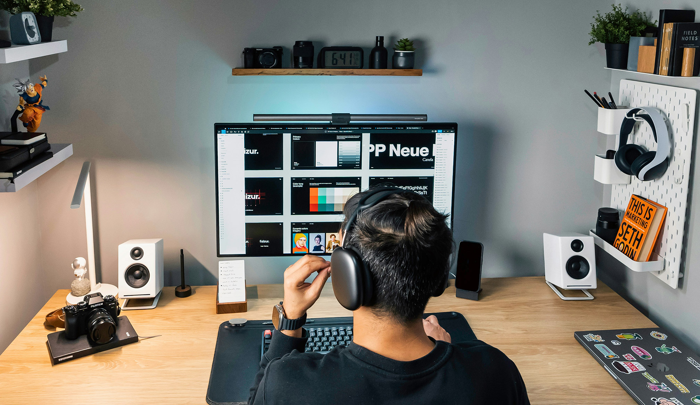

Visual Design
Refined execution across digital and print.
Senior Visual & UI Designer · Dallas–Fort Worth
I combine visual craft, systems thinking, research, and UI design to create clear, purposeful, high-performing experiences across brand, web, and product.
Selected work

ADI Global Distribution · 2024–2025
A conversion-focused brand landing page and reusable component system designed for responsive experiences across ADI's digital ecosystem.

Product UI/UX
A research-led mobile experience unifying movement, nutrition, wellness, progress, and community.

UX Research · 2025
Foundational research translating user behaviors, pain points, and switching triggers into a focused product roadmap.
Measured outcomes
How I work
Understand the problem, users, business goals, and opportunities.
Turn insights into a clear direction, hierarchy, and strategy.
Create, prototype, test, and bring ideas to life.
Iterate with feedback, analytics, QA, and implementation realities.
Capabilities
My background spans graphic design, brand, web, marketing, UI/UX, motion, analytics, and design systems—giving me a broad view of how experiences connect.
More about my journey ↗Refined execution across digital and print.
Responsive, accessible experiences built for performance.
Cohesive identities and scalable visual languages.
Reusable components, patterns, and standards.
Purposeful movement that adds clarity and polish.
Insight-driven design focused on measurable outcomes.
A long-term mindset
I approach design as an evolving system—grounded in research, shaped by context, and refined through real feedback. The goal isn't decoration. It's clarity, relevance, and meaningful business impact.
Let's connect
I'm interested in opportunities where visual craft, digital systems, and meaningful experiences come together.